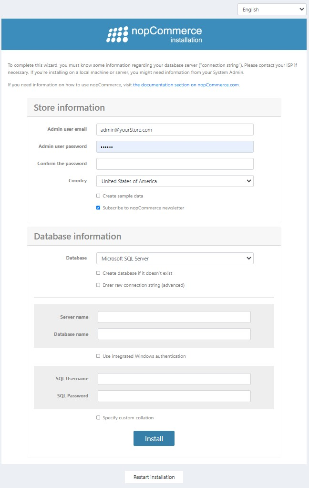

在 Windows 上安裝
本章節將說明如何下載 nopCommerce 軟體、將其上傳至伺服器並進行安裝。您也可以觀看我們 YouTube 頻道 上關於 nopCommerce 安裝的教學影片。
在開始安裝之前，請確保您的網站主機符合 執行 nopCommerce 的最低需求。
Note
若需更多關於主機選擇的指南，請參閱 此頁面。
下載 nopCommerce
若要在 Windows 上安裝 nopCommerce，您必須先下載它。請前往 下載頁面 並選擇適用於 Windows 的 Package without source code 版本。這是 nopCommerce 的預先編譯版本，只需上傳至您的託管服務供應商即可立即使用。
上傳 nopCommerce 檔案
下一步是將 nopCommerce 檔案上傳到您的伺服器。為此，您需要使用 FTP 連線，這可以讓您在電腦之間傳輸檔案。請依照下列步驟進行設定：
- 選擇並下載一個您要用於傳輸檔案的 FTP 客戶端應用程式。
- 在您的主機控制台（hosting control panel）中找到您的 FTP 憑證。
- 在您的 FTP 客戶端應用程式中，使用在上一步找到的 FTP 憑證，設定您的電腦與伺服器之間的連線。
- 將 nopCommerce 檔案上傳至伺服器。
建立資料庫
在執行 nopCommerce 之前，請先在您的主機控制台建立一個新的資料庫實例。此資料庫將用於儲存您的網站資料。
Note
建立資料庫時，若有要求，請選擇 MS SQL Server 2012 或 更新 的版本。
我們將會在稍後的安裝過程中，使用您的資料庫名稱、伺服器名稱（或 IP、URL）、使用者登入帳號及密碼。這些憑證是建立資料庫連線所必需的。
建立新網站
在您的虛擬主機控制台建立一個新網站。接著，找到一個可以讓您存取該網站的 URL。
安裝 nopCommerce
使用上一個步驟取得的 URL，透過瀏覽器存取網站。 當您第一次開啟網站時，將會被重新導向至安裝頁面，如下所示：

在「商店資訊 (Store information)」面板中，請填寫以下詳細資訊：
- 管理員電子郵件 (Admin user email)：這是網站第一位管理員的電子郵件地址。
- 管理員密碼 (Admin user password)：您需要為管理員帳號提供一組密碼。
- 確認密碼 (Confirm the password)：確認管理員密碼。
- 國家/地區 (Country)：從下拉式清單中選擇國家/地區。這能讓系統根據您選擇的國家/地區預先設定您的商店。例如：
- 從官方網站下載並預先安裝語言包
- 預先設定某些項目（例如：針對德國的 PangV 或「顯示稅金/運費資訊」設定）
- 預先設定運送詳細資訊、增值稅 (VAT) 設定、貨幣、度量衡等。
- 建立範例資料 (Create sample data)：如果您希望建立範例商品，請勾選此核取方塊。建議勾選此選項，以便在新增自己的商品之前，能先開始操作您的網站。您可以隨時刪除這些項目，或是取消發佈它們，使它們不再出現在您的網站上。
在「資料庫資訊 (Database information)」面板中，您需要輸入以下資訊：
- 資料庫 (Database)：您可以在此選擇 Microsoft SQL Server、MySQL 或 PostgreSQL。如果您是在 Windows 上安裝 nopCommerce，請選擇第一個選項。
- 如果資料庫不存在則建立 (Create database if it doesn't exist)：建議您預先建立好資料庫及資料庫使用者，以確保安裝順利。只需建立一個資料庫實體並加入資料庫使用者即可。安裝程序將會建立所有的資料表、預存程序等。
- 輸入原始連線字串 (進階) (Enter raw connection string (advanced))：如果您想直接輸入 連線字串 (Connection string) 而非填寫個別連線欄位，請勾選此選項。
- 伺服器名稱 (Server name)：這是資料庫的 IP、URL 或伺服器名稱。請從您的主機控制台取得伺服器名稱。
- 資料庫名稱 (Database name)：這是 nopCommerce 使用的資料庫名稱。如果您已預先建立資料庫，請在此填入該名稱。
- 使用 Windows 整合驗證 (Use integrated Windows authentication)：如果您是在虛擬主機供應商處進行安裝，則不需要此選項。
- SQL 使用者名稱 (SQL Username)：輸入您的資料庫使用者登入帳號。
- SQL 密碼 (SQL Password)：輸入您的資料庫使用者密碼。
- 指定自訂定序 (Specify custom collation)：這是進階設定，通常保持空白即可。
點擊 安裝 (Install) 開始安裝程序。當設定程序完成後，將會顯示您新網站的首頁。
Note
安裝頁面底部的 重新啟動安裝 (Restart installation) 按鈕，可讓您在發生任何問題時重新開始安裝程序。
Important
如果您想將 nopCommerce 網站完全重設為預設設定，您可以從 App_Data 目錄中刪除 appsettings.json 檔案。